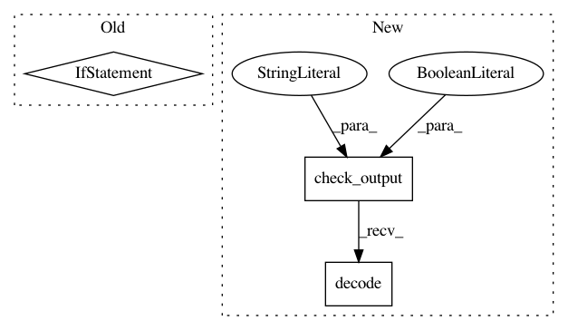

55d3c75b0bb9798ede66925f95b2b104da2f170e,test/test_task.py,,,#,544
Before Change
self.assertEqual(len(ret.splitlines()), 2, "Obtained {}".format(ret))
if __name__ == "__main__":
unittest.main()
After Change
has_docker = True
try:
subprocess.check_output("docker ps | grep test_sos", shell=True).decode()
except subprocess.CalledProcessError:
subprocess.call("sh build_test_docker.sh", shell=True)
try:
subprocess.check_output("docker ps | grep test_sos", shell=True).decode()
In pattern: SUPERPATTERN
Frequency: 3
Non-data size: 3
Instances
Project Name: vatlab/SoS
Commit Name: 55d3c75b0bb9798ede66925f95b2b104da2f170e
Time: 2017-10-18
Author: ben.bog@gmail.com
File Name: test/test_task.py
Class Name:
Method Name:
Project Name: vatlab/SoS
Commit Name: ad3a1023dcc2db26593a971320c8d480ae2b58fd
Time: 2017-06-27
Author: ben.bog@gmail.com
File Name: test/rq/test_rq_queue.py
Class Name:
Method Name:
Project Name: vatlab/SoS
Commit Name: 32fa0613863022090e51b45dd73d3fae57e57639
Time: 2017-03-31
Author: ben.bog@gmail.com
File Name: test/test_remote.py
Class Name: TestRemote
Method Name: testTaskSpooler